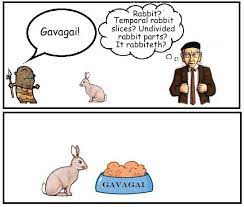
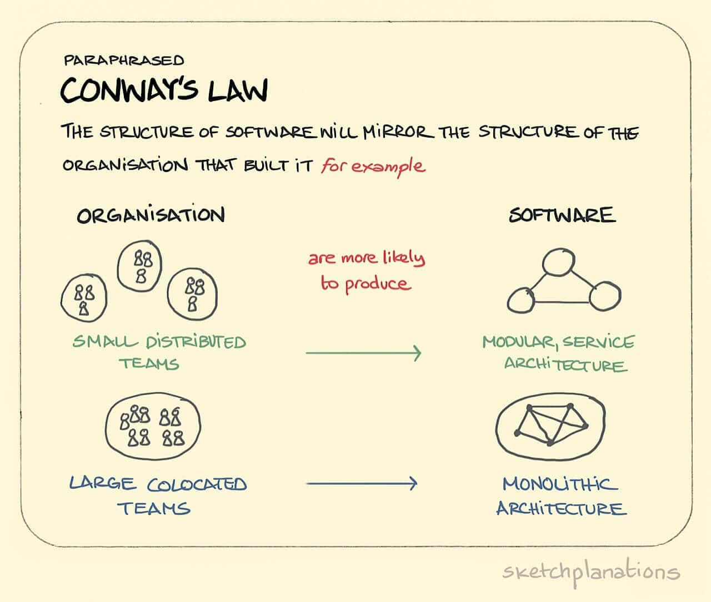

Sapir-Whorf Theory: How Language Influences Thought
Table of Contents
- 1. The Sapir-Whorf Theory
- 2. Sapir Whorf / Thesaurus Argument Examples
- 2.1. Sapir-Whorf Examples Regarding Political Ideology
- 2.2. Sapir Whorf Examples Regarding Culture/Sub-Cultures
- 2.3. Sapir Whorf Examples Regarding Axiology/Morality
- 2.4. Sapir Whorf Examples Regarding Epistemology
- 2.5. Sapir Whorf Grammar Examples
- 2.6. Sapir Whorf Examples Regarding Miscellaneous Topics
- 3. Parroting Quotes To Create The Pretense Of Knowledge
- 4. The Nature Of Answering “How?” And “Why?”
- 4.1. Examples Of Why-Questions That Start Scientific Inquiries
- 4.2. Examples Of Why-Questions That Later Became Rephrased As How-Questions
- 4.3. What Questions
- 4.4. Answering Why Questions
- 4.5. The “Why” Before “How” Problem
- 4.6. When People Get Stuck Asking The Wrong Philosophical Questions…
- 4.7. Empirical Verification
Note: I haven’t finished writing this file yet.
1. The Sapir-Whorf Theory
The Theory of Linguistic Relativity is a principle suggesting that the structure of a language influences its speakers’ worldview or cognition, and thus people’s perceptions are relative to their spoken language. Linguistic Relativity is traditionally known as the Sapir–Whorf Hypothesis, but I prefer to call it the Sapir-Whorf Theory instead since there is definitive evidence that language does influence thought. The Sapir-Whorf Theory is often brought up when discussing how the usage and ability of different human languages may influence human thought, but it’s not necessary to speak another language in order to understand linguistic relativity. It’s sufficient to observe linguistic relativity within only a single language. In fact, most linguistic relativity tends to originate from semantic differences in practice, whether inside of a language itself or between languages that use different words for different concepts. There is some evidence that different grammatical structures can influence thought to an extent, but they are not the primary cause of linguistic relativity.
Language does for intelligence what the wheel does for the feet and the body. It enables them to move from thing to thing with greater ease and speed and ever less involvement. ― Marshall McLuhan, Understanding Media: The Extensions of Man
In this case, vocabulary is like a path or a rut that makes it more likely for people to follow that path than other paths.
1.1. Gavagai And The Arbitrariness Of Words

The original rendition of Gavagai gets rather unnecessarily abstract. Suppose someone who doesn’t share any language with you points at a rabbit and shots “Gavagai!” The top pane of the comic suggests several possibilities “Gavagai” might mean:
- “rabbit” (obvious)
- “look!” (a verb, e.g. look at where I’m pointing)
- “prey/food/meal/animal” (term more generic than rabbit)
- “white” (an adjective, e.g. it’s a white rabbit)
- The specific name of that particular rabbit, like a pet’s name.
“Gavagai” has multiple interpretations because the person who doesn’t speak the language doesn’t have any context for figuring out the specific meaning. The takeaway here is that there is no objective basis for how meaning gets attached to soundstrings.
Dictionaries are supposed to document meanings according to how words are used. Dictionaries don’t create meaning, but dictionaries often tend to be used prescriptively instead of descriptively in practice since they’re seen as an authoritative source when people disagree over what words should mean.
A word’s literal dictionary definition might be X, while it is Y in the minds of others. The most common meaning and usage of words is determined by how people use said words, so the word’s de facto definition becomes Y. Hence why dictionaries are always out-of-date as soon as they are published. Dictionaries can only be updated so fast, so we have to wait for dictionary entries to be updated if a word’s meaning changes quickly.
Ideally, people should use words according to their most common meaning and usage if they want to be understood most easily. However, people can and should explicitly redefine words if there’s a better meaning that clarifies confusion, especially on important issues.1 A significant part of a conversation is clearing up misunderstandings of what people say during that conversation, especially when it comes to anything complicated or outside normal discourse. Most people usually just translate whatever smarter people say into something else that fits into their brains better.
Some definitions can be better and more practical than others, and for different contexts. A “false” definition is said to be either: 1. a definition (deliberately) designed to carry a connotation it doesn’t deserve, or 2. a definition that defines something doesn’t exist in reality, but can help describe what/how reality is (in comparison to what it is not).
Fallacies of Definition are the various ways in which definitions can fail to explain terms. Definitions may fail to have merit if they are:
- circular
- overly broad
- overly narrow
- ambiguous
- defined with obscure language
- incomprehensible
Relevant Reading: Wikipedia: Private Language Argument.
1.2. Classical Conditioning
Wikipedia: Classical Conditioning
Repeated association of words and concepts together affects how we think about them. If we observe a word being used with specific connotations enough times, we will start to associate the word with the connotations, potentially up to the point that the connotations are built internally into the word’s semantics. All modern journalists are aware of how classical conditioning has the power to influence people’s minds, and they use it all the time to manipulate the masses.
For example, most people think that the sky is blue, when it actually isn’t always blue. People only believe this because the phrase that “the sky is blue” has been repeated so many times that it’s instilled into people’s minds as an obvious fact of life, and they never bothered to question the extent of its truth. Examples like this and others demonstrate how a lie that is told enough times will appear to be true.
Relevant Reading: Parroting Quotes To Create The Pretense Of Knowledge.
As another example, swastikas have historically appeared across many different cultures throughout history. But in the modern world, swastikas are now usually associated exclusively with Nazism due to the Nazis’ rise to power and the symbol’s repeated association with Nazis.
{kind=link}
1.3. Selective Attention
Consciousness can be thought of as will and awareness. If one expands, the other detracts. Attention is the concentration of awareness on some phenomenon to the exclusion of other stimuli. Selective Attention is an individual’s limited capacity to choose what they pay attention to and what they ignore.
Language influences people’s thoughts when their minds subconsciously associate connotations with a term(s), or get preconceived notions about what a concept(s) is/are from the phrasing used to explain the concepts when they first learn about them. This occurs when definitions evade people’s Selective Attention perhaps as a truth sandwich.
If we fail to pay enough attention to how words and concepts are defined, our preconceptions of the ideas will influence how we think about them. As we shall see in the videos below, humans have limited attention spans, so it’s always possible for someone to sneak details into our thoughts without us noticing.
- Leading Questions - Yes Prime Minister
- Selective Attention Test 1: Cups Game
- Selective Attention Test 2: Passing The Basketball
- Selective Attention Test 3: The Door Study
When words are construed to evade people’s selective attention, this tends to result in false equivocation fallacies, contradictory beliefs, and double standards. Selective Attention thus plays a major role in forming our belief networks.
Since every person has their selective attention focused on different subjects, different people will be able to catch when definitions are influencing our thoughts. The key to expanding our selective attention is to avoid echo chambers and ideological circles and explore other people’s perspectives and worldviews. As subjects, we have limited knowledge about the world. Every person’s perspective is different and has different assumptions. Exploring other perspectives allows us to bring our unexamined assumptions into our consciousness and critique them, which is the main goal of philosophy.
If someone were extremely well-versed in a subject to which they were opposed, then no amount of calling this rose by another name would fool them into changing their opinions. For instance an expert on Communism who is opposed to Communism could never be taken in by somebody attempting a thesaurus argument trying to convince them that Communism is good. Try though they might to relabel it “collectivism” or “meritocratic distribution” or something else, the expert is always going to recognize the underlying idea regardless of what it’s being called. But now imagine someone who is ignorant to the details of Communism, yet is still superficially opposed to the idea. Maybe a better dead than red country-type. Now he may balk if someone tries to discuss implementing Communism in his country, but would be much more likely to discuss the ideas of “collectivism” or “meritocratic distribution” The ignorant are susceptible to thesaurus arguments because their lack of understanding means they oppose only the word not the ideas the word is supposed to represent which they do not understand.
1.3.1. Tracking And Modeling Where Our Attention Is Focused
Memes compete for real estate in our brains. Theoretically, we can determine which memes and thought patterns are most dominant within our minds, as well as what we’re ignoring (what we talk don’t talk about) by using Corpus Linguistics to analyze the frequency of words and collocations in our speech. Collocations have major effects on our cognitive processing by affecting how we associate words together because words get their meaning from other words.
1.4. Using Language to Influence Thought
Successful communication depends on the meanings of words and phrases depends existing or “agreeing” between minds. When words don’t have the same connotations between the minds that are communicating between each other, this makes it possible for misunderstandings. When people debate and they have mentally defined terms differently from each other, they often talk past each other, unless they clarify what they mean in their mental definitions.
Conway’s Law is the principle that organizations tend to design systems that mirror their own communication structure. In order for a product to function, the authors and designers of the product’s component parts must communicate with each other in order to ensure compatibility between the components. Therefore, the technical structure of a system will reflect the social boundaries of the organizations that produced it, across which communication is more difficult.

The correspondence between language and thought has similarities to Conway’s Law. To facilitate communication, we tend to create and define words for describing what we’re thinking about. Conversely, the language that we’re using can influence our thought when we link connotations to concepts and our selective attention fails to catch this. Let’s call the process where language influences thought the Sapir-Whorf Effect, and the process where thought influences language, the Reverse Sapir-Whorf Effect. When someone creates wordplay that manages to successfully influence someone else’s thoughts into believing what they want them to (that they otherwise wouldn’t normally believe), we shall call this either a Thesaurus Argument or a Semantic Trojan Horse. People who parrot what other people say tend to have their thoughts influenced by language, and people who invent neologisms and phrases that other people use tend to be good at influencing other people’s thoughts. Ideologues tend to use exploitative rhetoric to promote their ideas.
In order to persuade someone, an individual must analyze the beliefs and language of the person that they want to persuade. They must determine how the other person maps words and beliefs between each other and in which contexts. If done strategically, the individual can preemptively predict how other people will positively or negatively respond to the language that they use, and they can craft their language accordingly to affect the other person’s beliefs and predispositions towards what they’re talking about. Conversely, we should mindful of how the language that we receive will affect how we interpret various ideas and concepts, lest it will be possible for other people to manipulate us via the Reverse Sapir-Whorf Effect.
Relevant Reading: Wikipedia: Persuasive Definition.
Note that the predictive text software used for typing logographic writing systems enables authoritarian governments (like China, or perhaps Singapore) to influence the words that people may use to describe stuff. Predictive text software thus increases vulnerability to the Sapir-Whorf Effect.
People may still be skeptical that language can influence thought after having read all this, so it helps to show concrete examples of how words and collocations with particular semantic definitions are influencing thought in the real world, as the next section shall show.
1.4.1. Motte-Baileying People
Motte-and-Bailey tactics are often used to take advantage of the Sapir-Whorf Effect. Ideologues are always seeking ways to promote their ideas, and they know that other people will be turned off if they directly or explicitly say what they really want to do (the “bailey”). So they’ll argue for a more modest position that is easier to defend instead (the “motte”).
Typical Leftist Motte-Bailey Rhetorical Strategies:
- “It’s a conspiracy theory. None of that is actually happening.”
- “Even if it happened, it’s nowhere near as bad you’re describing it.”
- “It might be happening, but here’s why that’s a good thing.”
- “That’s old news. Why are you still talking about it?”
2. Sapir Whorf / Thesaurus Argument Examples
2.1. Sapir-Whorf Examples Regarding Political Ideology
- Constitutions always say that the government must serve the people, but they never define who the “people” are. For example, slaves weren’t considered part of “the people” in the US until 1865, and neither were Native Americans until 1924. Read more: Defining Who “The People” Are
- When “Democracy” is called “Rule of the People”, it fools the public into thinking that they have real power in the government.
- The “Deep State” has connotations of being associated with craziness. If we want to talk to the public about it, we should instead use words like “career politicians” and “unelected officials who make huge decisions”.
- “Russia” refers ambiguously to the land area versus the people; and perhaps more interestingly, the people versus the government.
- Saying that people employed by the US Department of Defense have “served” or “served the country” versus “worked for the military”.
- The former gives the position a sense of honor, so it’s kind of a way of bestowing honorifics via the verb form(s).
- Saying that a government service “loses money” instead of “costs money”.
- E.g. “The USPS is viewed favorably by 91% of Americans despite billions in losses annually.”
- “It’s a service. It doesn’t lose money. It costs money. No one says the military loses $750 billion / year.”
- E.g. “The USPS is viewed favorably by 91% of Americans despite billions in losses annually.”
- “student loan forgiveness” versus “debt cancellation” versus “stealing”.
- “affordable housing” avoids the negative connotations of “low-income housing” since the latter has become associated with increased crime rates and lower housing prices.
- “Affirmative Action” versus “Race Based Hiring” or “Race Based Admissions”.
- “Gun Grabbers” versus “Gun Control Activists”
- “Hate Speech” is used as an excuse to limit “Free Speech”.
- From the other perspective, “Free Speech” is an excuse to allow “Hate Speech”.
- “Equal Representation” versus “Diversity” versus Anti-White Racism.
- The Sapir-Whorf of “Assault Rifle”.
- “politically correct” and “politically incorrect”.
- First-Worlders live in an economy that is said to be “Capitalist”, so socialists, communists, and other left-wingers attribute all of the economy’s failures to capitalism, even though the unequal and inefficient distribution of land is actually the main source of the world’s economic problems, not Capitalism.
- “Single-Payer Healthcare” versus “All-Payer Healthcare”.
- The Sapir-Whorf of Communism / Communist. Many people will say “Communist China”, even though China is now closely to Fascism than Communism like it used to be.
- Some Communists associate “Communism” with the word “Community”, which distorts their perception and understanding of what “Communism” is.
- The Sapir-Whorf of “Modern Liberal” vs “Liberal” vs “Progressive”.
- The Sapir-Whorf of “Nazi” as “National Socialist”.
- The Sapir-Whorf of “Antifa” as “Anti-Fascist”.
- The Sapir-Whorf of “social contract” versus “Implicit Mutual Social Agreement (IMSA)”.
- “Voluntaryism” versus “Anarcho-Capitalism”. “Voluntary” itself is a contrived term since agency is entirely circumstantial.
- Augustus assumed the title of “First Citizen” or “Princeps” instead of “King” or “Rex”.
- “Biological racial differences” versus “race realism”. The former seems to be carry fewer negative connotations, in many cases, since leftists have been told that race realism is racist.
- The meaning and semantic change of the words “well-regulated” in the Second Amendment of the US Constitution.
- “well-regulated” originally meant “well-functioning”, but the meaning of the word “regulate” changed around over the centuries, especially during the Prohibition and Great Depression Era.
- Using language to deceive people into doing what you want: Confusion of the Roman Calendar and the Fall of Pompey.
- Everybody keeps saying “Malthus was wrong” when some people say that we need to take overpopulation more seriously, even though they never said that Malthus was right.
- Malthus’s thesis was that subsistence agriculture is the main factor limiting population size. But since he was wrong about that, and since Malthusianism and Neo-Malthusianism have both become words for expressing concern with overpopulation, everybody associates negative connotations with just the word “Neo-Malthusianism”.
- As a result, there really aren’t any good words for expressing overpopulation concerns without people immediately jumping to saying “MaLtUs wAs WrOnG!”
- “private defense agency” versus “political corporation” for Ancap terminology.
- “finite” isn’t exactly a concrete word. Georgists think it means one thing, and Ancaps/non-Georgists think it means another.
- There’s different “finiteness” to physics too. The sun is infinite as far as our lifetime is concerned. Oil less so. Nuclear more so.
- When people are used to hearing about “buying and selling houses” instead of “buying and selling land”, this leads them to think that it’s the house itself makes up most of the property value, even though in most cases, it’s actually the land underneath the house that holds most of the value. The 2008 Housing Crisis was caused by the popping of a real estate bubble caused by land speculation (and the loaning of land/houses to people who couldn’t afford the mortgages).
- Calling “Land Value Tax” a “tax” causes Alloidal Libertarians and Ancaps to think that it’s a bad thing, even though it’s arguably not a tax since it doesn’t deprive people of the fruits of their labor, since land is not created by labor.
- Political campaigns for local elections may use the term “Community Investment” instead of “Taxation” if they plan to raise taxes if they win the election, but they cannot say that they want to raise taxes for a locality that is very opposed to raising taxes.
- Labeling incidents as “riots” vs “protests”. Nowadays, the difference and labeling between the two has become very politicized, thus bringing the terms into people’s selective attention and reducing the possibility that the term chosen affects people’s judgements and thinking.
- The definition of “crime”. There’s been recent movements to rename the phrase “commit suicide” to “die by suicide” instead, and there’s of course lots of disagreement about what counts as a “crime” (e.g. jaywalking?, prostitution?, pirating books/music/movies?, et cetera)
2.2. Sapir Whorf Examples Regarding Culture/Sub-Cultures
- The word “Science” has been corrupted by leftists and others to be a magical word that affirms their beliefs and worldview.
- The definition of “woman”; See: The Trans Paradox.
- The Sapir-Whorf of “straight”, “bisexual”, and “gay”, even though sexual orientation is a spectrum.
- “gender-affirming care” vs “transgender surgery”, “sex-reassignment surgery”, etc.
- Calling people “cisgender” instead of “normal”.
- Some leftists think that only white people can be “racist”, as evident by their use of the term “reverse racism”.
- “White Privilege”: Since Academics have framed and termed it a “privilege”, a lot of people parrot that, and it reinforces the misconception that racial achievement gaps are caused by environmental factors, rather than genetics.
- The Sapir-Whorf of Happiness.
- The Sapir-Whorf of Pride. One can be proud of oneself, but one can also be proud of others.
- People each define “eugenics” differently, with more broad (and dare we say more accurate) definitions also including the prohibition of incest and the selection of desirable traits since those help improve the quality of the gene pool.
- Many people mistakenly believe that eugenics has to involve race, that it has to be tied to Nazism, or that it has to involve cherry-picking specific traits, but these are all these misconceptions.
- Saying that the 2020-2023 recession was caused by “covid” versus the “covid-19 lockdowns”.
- “Russia attacked Ukraine” versus “Russia invaded Ukraine”.
- Sapir-Whorf of religious labels.
- Outsiders view Shiite and Sunni Muslims as Muslims, as do Shiites and many Sunni Muslims, but the most extreme Sunnis view the Shiites as belonging to a different religion than is not Islam.
- The Sapir-Whorf of calling different ethnic groups “indigenous” or not.
- The Reverse Sapir-Whorf Effect of “Native Americans” causes people to subconsciously believe that North America belongs to American Indians, even though the vast majority of the population of the Americas is by people with ancestry from other continents.
- American Aboriginals
- European Aboriginals
- Native Europeans
- The Reverse Sapir-Whorf Effect of “American Indians” …
2.3. Sapir Whorf Examples Regarding Axiology/Morality
- The Definition of “Morality”: Some people assume that morality is objective, while others assume that it is subjective or inter-subjective. Morality has many different definitions.
- When people are inclined to say that “altruism” is a good thing since it is often defined as “helping others”, even though a better definition is “Acting for the benefit of other, at some cost to oneself”. See: Post-Overton FAQs
- When people are inclined to say that “selfishness” is a bad thing since it is often defined as “Acting for your own benefit, at the expense of others”, even though a better definition is “Acting for your own benefit, regardless of others”. See: Post-Overton FAQs
- The use of value as both a verb and a noun contributed to this person’s inability to understand that perceived value depends on perspective. For example, he said that “wood has value as firewood”, but thinking of value as a noun makes it harder to think of value and the act of valuing something as a subject-object relation.
- “Selfish Gene” is a misleading metaphor. It’s true that life is intrinsically selfish, but the metaphor causes people to mistakenly believe in false ideas like kin altruism and the genocentric theory of evolution, in large part because people failed to evaluate if genes can truly be selfish or not. There are several problems with the metaphor, as explained in Debunking the Selfish Gene.
- The Rhetoric of Exploitation
- How Efilists claim that “organisms are slaves to their DNA”. i
- How Ancaps claim that “we are slaves to the government”, and other exploitative rhetoric like “tyrant”, “ruler”, “throne”, etc.
- The Non-Aggression Principle is better thought of as a spectrum, rather than a singular unambiguous law. However, framing the NAP as a principle instead of a spectrum hides this fact from most people.
- The existence of terms like “reciprocal altruism”, “parental altruism”, “sibling altruism”, “cousin altruism”, “kin altruism”, etc causes people to think that they’re all altruistic acts, even though they are all better explained by selfishness.
2.4. Sapir Whorf Examples Regarding Epistemology
- How the Sapir-Whorf Effect Causes People to Ask the Wrong Philosophical Questions since they have come to subconsciously take the meanings of words for granted.
- The Definition of “God”.
- People think that the sky is blue, when it actually isn’t always blue. Most people only believe this without ever questioning it because the phrase that “the sky is blue” has been repeated so many times that it’s instilled into people’s minds as an obvious fact of life.
- How the “metaphysics” can misguide people into thinking that there are objective foundations for many things, even if there is really aren’t any.
- How most people fail to distinguish between “different definitions of free will”.
- How the phrases “pursue pleasure” and “avoid pain” misguide people into believing in hedonism, even though these phrases both have a homunculus fallacy hidden within them.
- People have different philosophies and opinions on rationality and what it means to be “rational”.
- “Paradox”: Merging five different definitions into the word “paradox” confuses our intuition of phenomena that cause contradictions and such.
- “The Truth” versus “My/Your/His/Their/Etc Truth”. Most people think that “Truth” is objective, so they say “The Truth”. But if we want people to believe that truth is subjective, then we shouldn’t be saying “The Truth”. When people say “The Truth”, what they really mean is what they think is true (but they’re trying to portray it as objective). On the other hand, saying “your truth” to someone that you disagree with makes their truth/beliefs seem subjective, which dampens their credibility.
2.5. Sapir Whorf Grammar Examples
- Since humans evolved to have selective attention, word order is very important for guiding attention, and it can be used to bring ideas into focus, or to hide them from one’s focus.
- Ms. And Mrs. are different gender pronouns if you think about it - the difference between a married and an unmarried woman is so severe they literally have different pronouns.
- The use of active voice versus passive voice is very useful for when one wants to use exploitative rhetoric: The Rhetoric of Exploitation.
2.6. Sapir Whorf Examples Regarding Miscellaneous Topics
- The term “Disorder” in ADHD, ASD, OCD, and other terms causes many people to think that each of those are unilaterally bad things, even if they can sometimes have positive effects in some cases.
- The sapir-whorf of defining “friend”.
- Example of how language made it easy for Roman government officials to rig the calendar in their favor.
- Saying that Latin died while Greek survived.
- In actuality, both languages survived into the modern era, but they’re obviously not spoken the same as they were 2000 years ago. Spanish, French, Italian, Portuguese, Romanian, and others are the modern descendants of Latin, while Modern Greek is the descendant of Ancient Greek. But there are still many people who mistakenly think that “Latin died” since it’s there is no language called “Modern Latin” today.
- What counts as Artificial Intelligence: The AI Effect.
- Distinguishing between Hindi, Urdu, and Hindustani.
- Many people commonly say that Spanish is the third most spoken language in the world, but I’d argue that Hindustani definitely has more speakers when we include Urdu speakers as well (Hindustani), so Spanish would only be the fourth most spoken language in the world.
- What plants do and do not get considered as “weeds”.
{kind=link}
{kind=link}
3. Parroting Quotes To Create The Pretense Of Knowledge
There seems to be a tendency where people will frequently repeat quotes whenever it seems to even remotely pattern match with the current topic of discussion. This is a sign of “lower-level thinking” and apophenia, especially when the nonsense doesn’t actually mean anything or lead to anything insightful. A lot of popular ideological quotes also make use of emotional rhetoric, loaded language, and sensationalist phrases.
Some examples:
- Devout Christians repeat lots of quotes and passages from the Bible under the pretense that it’s actual knowledge,
- Chinese people had to recite quotes from the Little Red Books during the Cultural Revolution as if the quotes were real knowledge.
- North Koreans have to memorize and repeat quotes about their Supreme Leader for most of their education, due to the country’s cult of personality.
- Et Cetera. Political ideologues do this all the time on the Internet.
This is not to say that repeating quotes is always bad. There are times when recalling quotes is important and perhaps even necessary. But if it’s being done habitually when the quotes have only slivers of relevance to the topics and current context at hand and/or people think that repeating said quotes demonstrates to other people that they are knowledgeable, then it’s probably being over-used under the pretense that it’s “critical thinking”, and the behavior should be re-evaluated. Constantly repeating quotes is exactly what religions, cults, superstitious philosophies, internet memes, and malevolent political ideologues do. Many incorrect sayings get widely spread in human languages because they’re easy to remember, repeat, and get stuck in people’s heads.
Acting based on reason is superior to acting according to interpretations of quotes. Good science typically doesn’t repeat quotes very frequently.
4. The Nature Of Answering “How?” And “Why?”
Disclaimer: I’m still pondering this topic. I might later decide that some of these thoughts are wrong and/or revise this section.
4.1. Examples Of Why-Questions That Start Scientific Inquiries
Often science begins with Why-questions. Here are some examples:
- Why are the animals and plants of this world the way they are?
- Why does lightning occur?
- Why is iron magnetic?
- Why are voiceless obstruents more common than voiced obstruents among the world’s languages?
- Why are there so many similar species across Earth’s continents?
- What do kidneys do?
- What causes fire?
- Why are humans the way they are?
However, it is often the case that when answering why something happens we end up explaining how it happens. By the definition of “why”, someone could easily just state the motive, cause, or reason of whatever subject the question is asking about in a single stands or just a few words, but when the question is being asked with an expectation of an in-depth answer, answering with only a single sentence or a few words is not acceptable, thus very descriptive and comprehensive descriptions have to be given in order to answer the question. Nevertheless, it is still the case that in order to answer “why” questions, we must explain how things work and answer other questions along the way as they come up before we can answer the original “Why?” question.
But in doing so, it also becomes possible to ask a similar question that is reworded such that it asks “How?” instead of “Why?” and leads to the exact same answer. And then when the answer is talk to future learners who are learning about the topic, the questions are more likely to be presented as asking “How?” instead of asking “Why?”, although sometimes they might still be asked with “Why?”, especially if it just feels more natural to ask the questions with that interrogative and/or the person asking the question has no idea where to start answering it or the concepts needed to explain the answer to the question that they want to know. Another way to think of the difference between How and Why is that “How?” is the same question as “Why?” except that “How?” is asking for more detailed answer.
4.1.1. The Three Ultimate Philosophical Questions
- What is the basis of truth?
- What is the basis of value?
- What is the basis of agency?
4.2. Examples Of Why-Questions That Later Became Rephrased As How-Questions
The Questions Shown Previously, but reworded to ask “How?” instead of “Why?”:
- How does Evolution work?
- How does lightning occur?
- How do humans think and behave?
4.3. What Questions
Another type of question is What? questions, which only test surface-level familiarity; it is easy to regurgitate a definition and imitate understanding.
4.4. Answering Why Questions
4.4.1. “How” And “Why” In Other Languages
Are there languages that make different semantic distinctions between their equivalent ways to asking how and/or why? If so, what kinds of semantic differences exist between those languages and English’s way of saying things? Known Examples:
- ¿Por qué? and ¿Para qué? in Spanish
4.5. The “Why” Before “How” Problem
4.5.1. How Science Works
Main Article: The Reasoning Process And Scientific Method
Science aims to describe the how’s of how reality works before explaining the why’s. What religion does instead is it skips over the how’s and jumps straight to answering the why questions, and then it uses the fabricated answers to those Why? questions to answer the How? questions about how reality works. Religion fails to correctly understand the world precisely because it works in the opposite direction that Science does (Science would describe how reality works before it ever describes why, if it ever even gets to that point).
More specifically, when science doesn’t do a very good job of explaining the why’s about realities, these why’s relate to ontologies (e.g. gravity, creation of universe, forces of universe, chemical structure of universe, properties of universe, etc)
The “Why” Before “How”? Razor is probably the simplest, the most general, and most general way to reject all supernatural phenomena (including God) in a single argument. The simplicity of the argument could be fittingly explained after explaining the reasoning process and the criteria and nature of degrees of certainty/skepticism and why arbitrary statements are not epistemically valid.
4.5.2. How Religion Works
The only way anyone could possibly explain why something works before describing how it works is if they fabricated a bunch of false made-up premises to explain the why’s, and then used the understanding generated by those false made-up assumptions to explain the how’s.
Of course, the main purpose of religion besides helping people think they know why the world works the way it does is to give people a philosophy of sorts (obviously not a rational one though) for understanding why they should live their lives the way they do / think they should. So although religion uses fabricated nonsense to explain the “how” questions of life, it needs to create the fabrications for explaining the “hows” in such a way that it helps them live their lives. For example, religious people often believe that God favored monogamy, and so they make monogamy part of their religion and use the fabrication of God to help explain it.
During the Scientific Revolution and the Enlightenment humans had for the first time in many millennia started trying to explain the how’s of Reality instead of the why’s. And it is during this era that people started rejecting religion in mass for the first time, because they started rejecting the commonplace epistemic error of trying to explain Why before explaining How, and believing in religion as the fallacious conclusion.
4.6. When People Get Stuck Asking The Wrong Philosophical Questions…
A critical reason why philosophical progress hasn’t progressed very far historically is because people are asking the wrong questions, in large because people can only ask questions that come to their minds, not questions that they never would have thought to ask given their environment, education, and circumstances.
4.6.1. List Of Wrong Philosophical Questions That Are Commonly Asked
How the Sapir-Whorf Effect Causes People to Ask the Wrong Philosophical Questions since they have come to subconsciously take the meanings of words for granted:
- Is there a God? -We should ask: Define God?
- Is the mind tabula rasa? -We should ask: Is the mind ever tabula rasa, to what extent, and at what stages of developments? The answer is too complicated to definitively say yes or no to this question.
- Do we have free will? -We should ask: How do we define free will? Besides determinism, what are the alternatives if we don’t have free will? Is ’probability’ (define) one of them?
- Perhaps it’s wrong to ask if it’s determinism or if it’s free will. Maybe it’s just probability and hence neither deterministic or free will.
- Should we obey the law? -We should ask: Is the law reasonable/justified? And the answer is: No, we should try to change it, but until we can change it, our best option is (probably) to follow it.
- Which planet is the closest planet to Earth? -The answer depends on what you mean by the closest planet to Earth. There are four different questions that have more precise answers such that they each have clear, unambiguous answers.
- “Is X true?” –> “Suppose that yes, X. Then what? What changes in how I should live my life? If nothing, then it does not matter whether X or not X anyway.”
4.6.2. My Thoughts On Theological Non-Cognitivism And Igtheism
Wikipedia: Theological Non-Cognitivism.
I’ve never agreed with the Transcendental Argument for God (TAG), but I’ve always thought that the Cosmological Argument was the best argument for God, however it could only prove a non-supernatural Deistic God(s) at best. Deism is basically the position that God created the Universe, but no longer intervenes in its affairs. Nobody may completely understand why the universe was created, but even then, it is highly dishonest to conclude that an all-knowing, all-powerful magical man was the creator without evidence and for lack of a better explanation. Every supernatural definition of God is non-existent.
If we insist that everything has a creator, we get:
| Christianity: | Universe | <- God | <- ∞ of creators |
| Atheism: | Universe | <- ∞ of creators |
If we insist that the Universe is eternal or God is eternal, we get:
| Christianity: | Universe | <- God |
| Atheism: | Universe |
Atheism is simpler in both cases.
Relevant Essay: The Homunculus Fallacy And Its Inverse.
Relevant Wikipedia Article: God of the Gaps.
4.7. Empirical Verification
Empirical Verification: How Do We Verify What We Know?
Footnotes:
Strike-through text is great for indicating when the crossed-out text has an unfavorable choice of words for communicating the writer’s thought and POV.